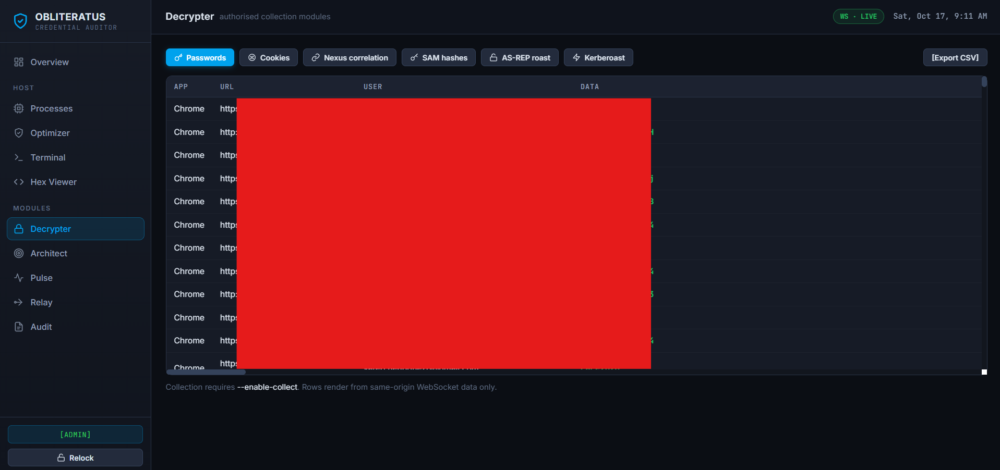

Windows Credential Exposure Auditor
The Mimikatz playbook, run as a defensive checklist.

OBLITERATUS answers one question — would Mimikatz work against this host? — and answers it with evidence: registry state, token privileges, service configuration and browser store exposure, each mapped to the exact Mimikatz module and MITRE ATT&CK technique it corresponds to.
It ships as a single binary with two modes. The headless audit is safe to run in CI and
exits non-zero when a CRITICAL or HIGH control is failing. The dashboard is a local
console on 127.0.0.1 with a per-run 256-bit token.
| Mode | Command | Audience |
|---|---|---|
| Headless audit | obliteratus.exe --audit | CI, scripted hardening reviews, blue-team baselines |
| Local dashboard | obliteratus.exe | Operators who want the interactive console on loopback |
403 and names the flag that would unlock it, until the
operator passes that flag explicitly. Unlocking prints a
[!] ... UNLOCKED banner at startup — the effect is never silent.
The full route-by-route gate is in Capabilities.
Download
Pinned list for v2.0.2. With JavaScript available this is replaced by the live release from the GitHub API.
| File | Size | SHA-256 |
|---|---|---|
| obliteratus_2.0.2_windows_amd64.zip | 5.8 MiB | 90b2e6e5794ed17892ccded42df81ea74840ca40b50370bd9fc7e117d9cff3c8 |
| obliteratus_2.0.2_windows_arm64.zip | 5.4 MiB | ae47be1d2bbce867b6e5f08de35be2e3d90649ffa8bf9c7bdecc1930cb077160 |
| checksums.txt | 428 B | — |
| checksums.txt.sig · checksums.txt.pem | — | cosign keyless signature + certificate |
Each archive contains obliteratus.exe, oblpack.exe, the README, SECURITY.md and the license.
Verify before you run
-
Integrity.
sha256sum -c checksums.txt # PowerShell: Get-FileHash -Algorithm SHA256 .\obliteratus_2.0.2_windows_amd64.zip -
Provenance. The checksum file is signed keyless with cosign, bound to the
workflow run and logged in the Sigstore transparency log. Pin the identity — a bare
Verified OKonly says someone signed it:cosign verify-blob \ --certificate checksums.txt.pem \ --signature checksums.txt.sig \ --certificate-identity-regexp "^https://github.com/DevCop95/pullgoscript/" \ --certificate-oidc-issuer "https://token.actions.githubusercontent.com" \ checksums.txt -
Dependencies. An SPDX SBOM ships per archive:
syft convert obliteratus_2.0.2_windows_amd64.sbom.json -o table
.exe files are not Authenticode-signed:
Get-AuthenticodeSignature reports NotSigned, SmartScreen shows
"Windows protected your PC", and Defender may quarantine on sight of the injection or
credential-collection strings. A trusted Authenticode signature needs an EV certificate or
an Azure Trusted Signing account — a paid, identity-verified credential this repository
cannot hold. Until one exists, the cosign signature is the honest guarantee:
this binary came from this repository's release workflow, even though Windows
will not validate it natively. Details and the operator/local signing path are in
Verify.
Build from source
git clone https://github.com/DevCop95/pullgoscript
cd pullgoscript
go build -o bin\obliteratus.exe .\cmd\obliteratusPrefer this to the archives if you want to read the code you are about to run. The toolchain floor is Go 1.26.9 — the standard library ships inside the binary, so an old toolchain is a vulnerable dependency.
Where to look next
Capabilities & gates
All 29 routes: what each one does, the flag that unlocks it, and its MITRE technique.
Audit checks
The 12 controls, their severity, the Mimikatz module each maps to, and the exit-code contract.
Verify a release
What the pipeline produces, the exact cosign command, and the Authenticode gap.
Security model
What v1 got wrong, what v2 does instead, and where the trust boundary sits.
Authorized use only
OBLITERATUS is for authorized security assessment, research and education on systems you own or are contracted to test. The credential-collection, persistence, evasion, lateral-movement and injection modules are deliberately locked; unlocking them is an explicit acknowledgement that your engagement permits their use. Unauthorized access to computer systems is illegal.
MIT © DevCop95 (Yared Henríquez). Source, issues and releases: github.com/DevCop95/pullgoscript.